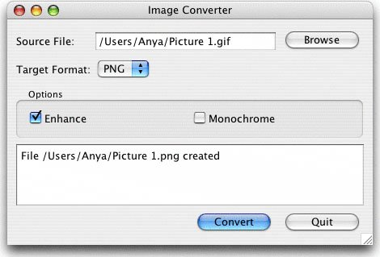

Inter-Process Communication
The QProcess class allows us to run external programs and to interact with them. The class works asynchronously, doing its work in the background so that the user interface remains responsive. QProcess emits signals to notify us when the external process has data or has finished.
We will review the code of a small application that provides a user interface for an external image conversion program. For this example, we rely on the ImageMagick convert program, which is freely available for all major platforms.

The user interface was created in Qt Designer. The .ui file is on the CD that accompanies this book. Here, we will focus on the subclass that inherits from the uic-generated Ui::ConvertDialog class, starting with the header:
#ifndef CONVERTDIALOG_H
#define CONVERTDIALOG_H
#include <QDialog>
#include <QProcess>
#include "ui_convertdialog.h"
class ConvertDialog : public QDialog, public Ui::ConvertDialog
{
Q_OBJECT
public:
ConvertDialog(QWidget *parent = 0);
private slots:
void on_browseButton_clicked();
void on_convertButton_clicked();
void updateOutputTextEdit();
void processFinished(int exitCode, QProcess::ExitStatus exitStatus);
void processError(QProcess::ProcessError error);
private:
QProcess process;
QString targetFile;
};
#endif
The header follows the familiar pattern for subclasses of Qt Designer forms. Thanks to Qt Designer's automatic connection mechanism (p. 28), the on_browseButton_clicked() and on_convertButton_clicked() slots are automatically connected to the Browse and Convert buttons' clicked() signals.
ConvertDialog::ConvertDialog(QWidget *parent)
: QDialog(parent)
{
setupUi(this);
connect(&process, SIGNAL(readyReadStandardError()),
this, SLOT(updateOutputTextEdit()));
connect(&process, SIGNAL(finished(int, QProcess::ExitStatus)),
this, SLOT(processFinished(int, QProcess::ExitStatus)));
connect(&process, SIGNAL(error(QProcess::ProcessError)),
this, SLOT(processError(QProcess::ProcessError)));
}
The setupUi() call creates and lays out all the form's widgets, establishes the signalslot connections for the on_objectName_signalName() slots, and connects the Quit button to QDialog::accept(). After that, we manually connect three signals from the QProcess object to three private slots. Whenever the external process has data on its cerr, we will handle it in updateOutputTextEdit().
void ConvertDialog::on_browseButton_clicked()
{
QString initialName = sourceFileEdit->text();
if (initialName.isEmpty())
initialName = QDir::homePath();
QString fileName =
QFileDialog::getOpenFileName(this, tr("Choose File"),
initialName);
fileName = QDir::convertSeparators(fileName);
if (!fileName.isEmpty()) {
sourceFileEdit->setText(fileName);
convertButton->setEnabled(true);
}
}
The Browse button's clicked() signal is automatically connected to the on_browseButton_clicked() slot by setupUi(). If the user has previously selected a file, we initialize the file dialog with that file's name; otherwise, we use the user's home directory.
void ConvertDialog::on_convertButton_clicked()
{
QString sourceFile = sourceFileEdit->text();
targetFile = QFileInfo(sourceFile).path() + QDir::separator()
+ QFileInfo(sourceFile).baseName() + "."
+ targetFormatComboBox->currentText().toLower();
convertButton->setEnabled(false);
outputTextEdit->clear();
QStringList args;
if (enhanceCheckBox->isChecked())
args << "-enhance";
if (monochromeCheckBox->isChecked())
args << "-monochrome";
args << sourceFile << targetFile;
process.start("convert", args);
}
When the user clicks the Convert button, we copy the source file's name and change the extension to match the target file format. We use the platform-specific directory separator ('/' or '\', available as QDir::separator()) instead of hard-coding slashes because the file name will be visible to the user.
We then disable the Convert button to avoid the user accidentally launching multiple conversions, and we clear the text edit that we use to show status information.
To initiate the external process, we call QProcess::start() with the name of the program we want to run (convert) and any arguments it requires. In this case we pass the -enhance and -monochrome flags if the user checked the appropriate options, followed by the source and target file names. The convert program infers the required conversion from the file extensions.
void ConvertDialog::updateOutputTextEdit()
{
QByteArray newData = process.readAllStandardError();
QString text = outputTextEdit->toPlainText()
+ QString::fromLocal8Bit(newData);
outputTextEdit->setPlainText(text);
}
Whenever the external process writes to cerr, the updateOutputTextEdit() slot is called. We read the error text and add it to the QTextEdit's existing text.
void ConvertDialog::processFinished(int exitCode,
QProcess::ExitStatus exitStatus)
{
if (exitStatus == QProcess::CrashExit) {
outputTextEdit->append(tr("Conversion program crashed"));
} else if (exitCode != 0) {
outputTextEdit->append(tr("Conversion failed"));
} else {
outputTextEdit->append(tr("File %1 created").arg(targetFile));
}
convertButton->setEnabled(true);
}
When the process has finished, we let the user know the outcome and enable the Convert button.
void ConvertDialog::processError(QProcess::ProcessError error)
{
if (error == QProcess::FailedToStart) {
outputTextEdit->append(tr("Conversion program not found"));
convertButton->setEnabled(true);
}
}
If the process cannot be started, QProcess emits error() instead of finished(). We report any error and enable the Click button.
In this example, we have performed the file conversions asynchronouslythat is, we have told QProcess to run the convert program and to return control to the application immediately. This keeps the user interface responsive while the processing occurs in the background. But in some situations we need the external process to complete before we can go any further in our application, and in such cases we need QProcess to operate synchronously.
One common example where synchronous behavior is desirable is for applications that support plain text editing using the user's preferred text editor. This is straightforward to implement using QProcess. For example, let's assume that we have the plain text in a QTextEdit, and provide an Edit button that the user can click, connected to an edit() slot.
void ExternalEditor::edit()
{
QTemporaryFile outFile;
if (!outFile.open())
return;
QString fileName = outFile.fileName();
QTextStream out(&outFile);
out << textEdit->toPlainText();
outFile.close();
QProcess::execute(editor, QStringList() << options << fileName);
QFile inFile(fileName);
if (!inFile.open(QIODevice::ReadOnly))
return;
QTextStream in(&inFile);
textEdit->setPlainText(in.readAll());
}
We use QTemporaryFile to create an empty file with a unique name. We don't specify any arguments to QTemporaryFile::open() since it conveniently defaults to opening in read/write mode. We write the contents of the text edit to the temporary file, and then we close the file because some text editors cannot work on already open files.
The QProcess::execute() static function runs an external process and blocks until the process has finished. The editor argument is a QString holding the name of an editor executable (for example, "gvim"). The options argument is a QStringList (containing one item, "-f", if we are using gvim).
After the user has closed the text editor, the process finishes and the execute() call returns. We then open the temporary file and read its contents into the QTextEdit. QTemporaryFile automatically deletes the temporary file when the object goes out of scope.
Signalslot connections are not needed when QProcess is used synchronously. If finer control is required than provided by the static execute() function, we can use an alternative approach. This involves creating a QProcess object and calling start() on it, and then forcing it to block by calling QProcess::waitFor-Started(), and if that is successful, calling QProcess::waitForFinished(). See the QProcess reference documentation for an example that uses this approach.
In this section, we used QProcess to give us access to preexisting functionality. Using applications that already exist can save development time and can insulate us from the details of issues that are of marginal interest to our main application's purpose. Another way to access preexisting functionality is to link against a library that provides it. But where no suitable library exists, wrapping a console application using QProcess can work well.
Another use of QProcess is to launch other GUI applications, such as a web browser or an email client. However, if our aim is communication between applications rather than simply running one from another, we might be better off having them communicate directly, using Qt's networking classes or the ActiveQt extension on Windows.
|